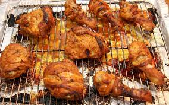

Chicken Tandoori recipe

Tandoori chicken gets its name from the bell-shaped tandoor clay oven
which is also used to make naan, or Indian flatbread. Skinless legs and
thighs are marinated in a tenderizing mixture of yogurt, lemon juice, and
spices and the meat is slashed to the bone in several places helping the
marinade penetrate and the chicken cook more quickly. The chicken gets its
characteristic red hue from either lots of fiery chile or the addition of
red food dye.
- 3 tablespoons vegetable oil
- 1 teaspoon ground coriander
- 1 teaspoon ground cumin
- 1 teaspoon ground turmeric
- 1 teaspoon cayenne
- 1 tablespoon garam masala
- 1 tablespoon sweet (not hot) paprika
- 1 cup plain yogurt (can sub buttermilk)
- 4 garlic cloves minced
- 2 tablespoons minced salt
- 4 whole chicken leg
- fresh ginger 1 teaspoon
- quarters (drumsticks and thighs)
-
Heat the oil in a small pan over medium heat, then cook the coriander,
cumin, turmeric, cayenne, garam masala and paprika, stirring often,
until fragrant (approximately 2-3 minutes). Let cool completely.
-
Whisk the cooled spice-oil mixture into the yogurt, then mix in the
lemon juice, garlic, salt and ginger.
-
Cut deep slashes (to the bone) in 3-4 places on the leg/thigh pieces.
Just make 2-3 cuts if you are using separate drumsticks and thighs. Coat
the chicken in the marinade, cover and chill for at least an hour
(preferably 6 hours), no more than 8 hours.
-
Prepare your grill so that one side is quite hot over direct heat, the
other side cooler, not over direct heat. If using charcoal, leave one
side of the grill without coals, so you have a hot side and a cooler
side. If you are using a gas grill, just turn on one-half of the
burners. Use tongs to wipe the grill grates with a paper towel soaked in
vegetable oil.
-
Take the chicken out of the marinade and shake off the excess. You want
the chicken coated, but not gloppy. Put the chicken pieces on the hot
side of the grill and cover. Cook 2-3 minutes before checking. Turn the
chicken so it is brown (even a little bit charred) on all sides
-
Move to cool side of grill, cover and cook: Move chicken to the cool
side of the grill. Cover and cook for at least 20 minutes, up to 40
minutes (or longer) depending on the size of the chicken and the
temperature of the grill. The chicken is done when its juices run clear.
What's the Temperature of Cooked Chicken? READ MORE: Let it rest for at
least 5 minutes before serving. It’s also great at room temperature or
even cold the next day. Serve with naan, and Indian flatbread, or with
Indian style rice, with yogurt-based raita on the side.